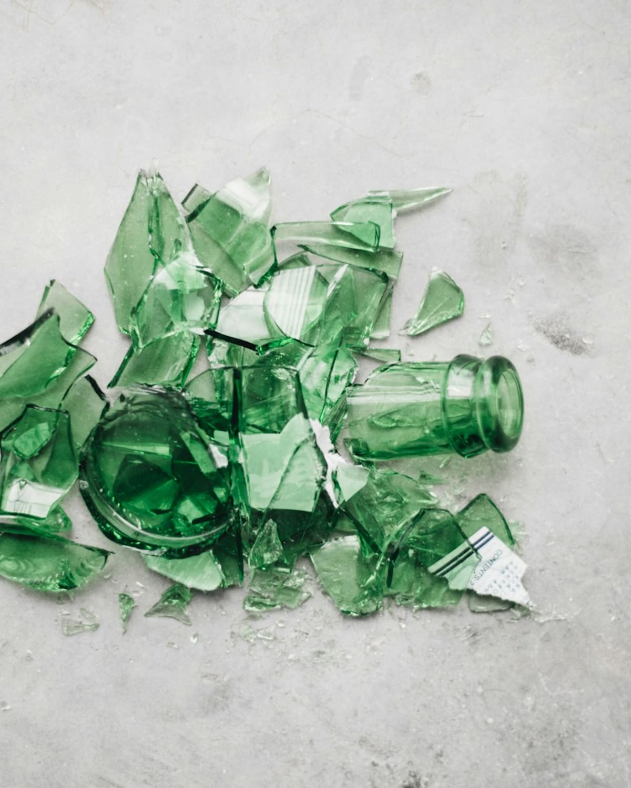
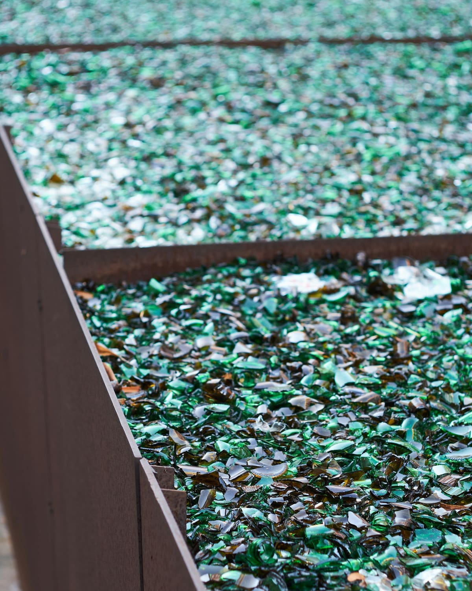
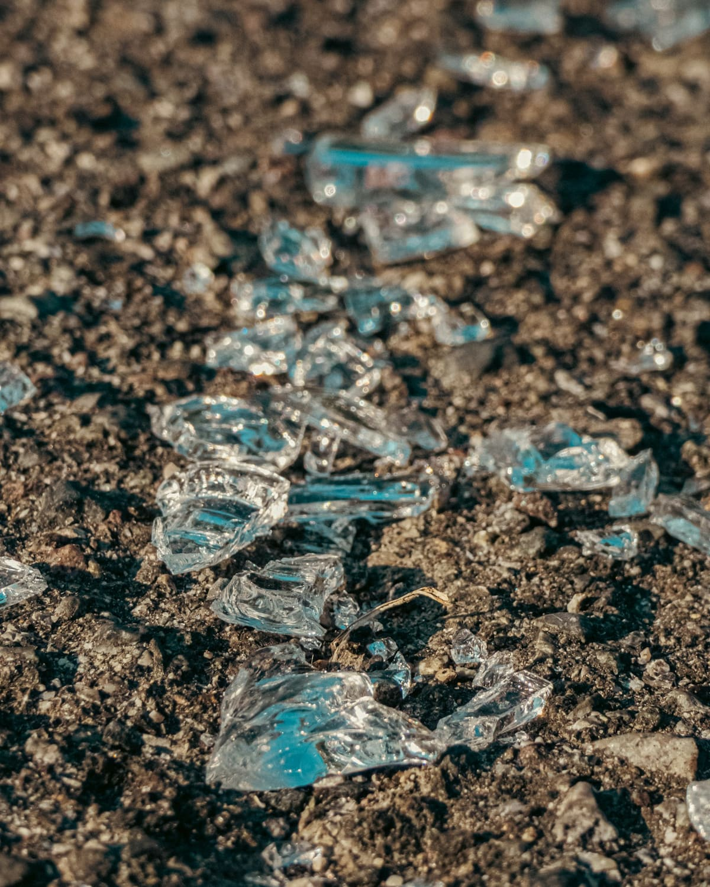
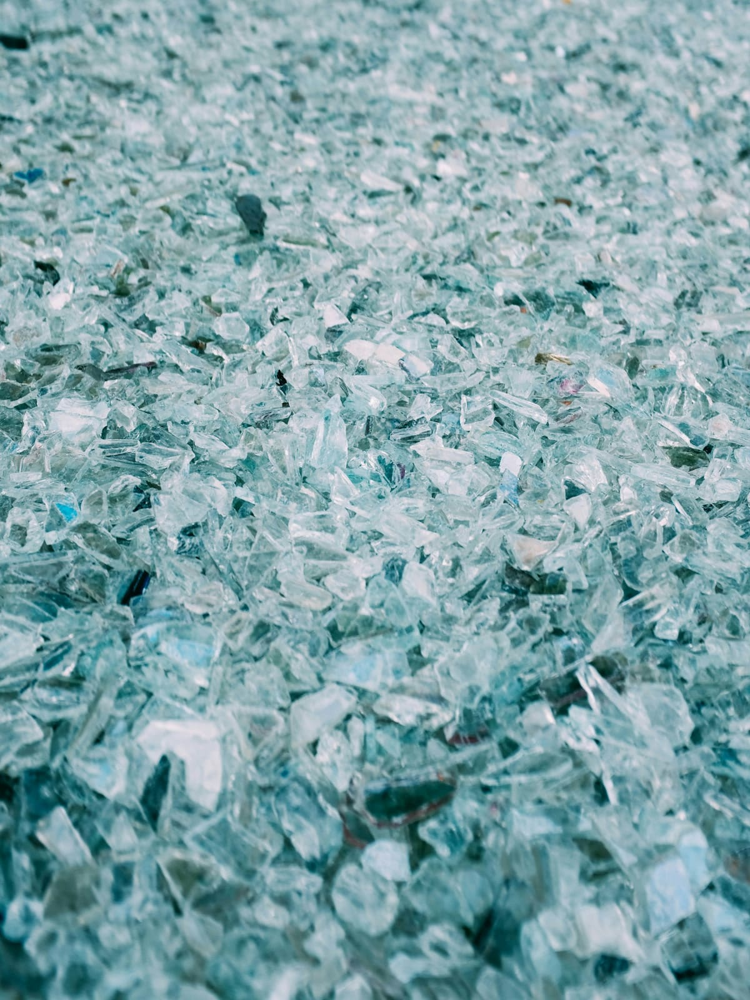
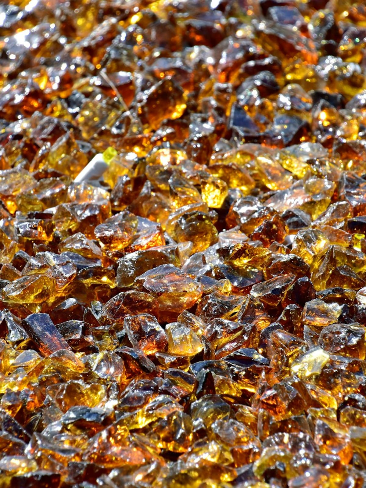
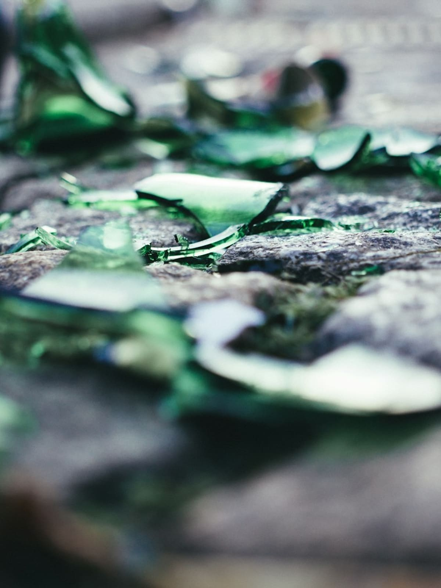

Glass Cullet / Delhi, India
Turning waste glass into valuable raw material.
We collect, sort and process glass cullet for reuse in the glass manufacturing cycle.
Scroll to discover
Introduction
Glass does not have to end its journey as waste.
Rian Cullet collects, sorts and processes glass that has already served its first purpose. Sorted by type and colour and prepared to a consistent standard, it returns to the furnace as raw material rather than being treated as waste.
That work keeps recoverable glass out of landfill and gives glass manufacturers a dependable source of recycled material.

Process
From discarded glass to industrial resource.
Four stages turn recovered glass into a material a furnace can accept.
-
01
Collection
Glass is sourced from relevant industrial and post-consumer streams.
-
02
Sorting
Material is separated according to relevant characteristics such as type and colour.
-
03
Processing
Recovered glass is prepared into usable cullet.
-
04
Supply
Processed cullet is supplied for reuse in glass manufacturing.
Material
Our glass cullet
Processed glass. Ready for its next cycle.
Glass generated during manufacturing.

Factory cullet is produced inside flat glass or container glass plants. It is the glass waste that arises during the manufacturing process itself, in either the flat glass or the container glass industry.
Post-consumer glass, recovered for reuse.

External cullet, also known as post-consumer or foreign cullet, is waste glass collected after consumption. It may be container glass or flat glass, gathered from municipal waste streams and other relevant sources.
Colour
Every colour has another cycle.
Cullet is sorted by colour because colour determines where the glass can go next.



Why cullet matters
Why recycled glass matters
Lower melting requirements
Cullet can help reduce the melting temperature required in glass manufacturing.
Energy efficiency
Using recycled glass as a raw material can contribute to lower energy requirements, and to the emissions associated with them.
Circular manufacturing
Recovered glass can be returned to the manufacturing cycle rather than being treated solely as waste.
Waste becomes input.
Our story
A vision that began in 1995.
The journey of Rian Cullet is driven by the vision and leadership of its founder, Ms. Indu Bhatia. With a strong focus on sustainability and responsible waste management, she established the foundation for a business dedicated to transforming waste glass into a valuable and reusable resource.
Her vision has been to create a reliable source of quality glass cullet for the glass manufacturing industry while contributing towards a cleaner and more sustainable environment.
Ms. Indu Bhatia
Founder, Rian Cullet
Heritage
1995The beginning of the Rian Cullet journey.
Based in Delhi and operating in glass cullet for over 31 years, the company has built its experience in the collection, sorting, processing and recycling of foreign and post-consumer glass cullet.
-
1995
Company established in Delhi.
-
Since
Growth and experience in collection, sorting and processing.
-
35+
Companies served across the glass manufacturing and recycling ecosystem.
-
Today
31 years of supplying processed glass cullet.
Sustainability
Building a more circular glass industry
Glass that is recovered, sorted and processed can re-enter manufacturing as raw material. The cycle closes rather than ending at landfill.
- Waste glassGlass that has served its first purpose.
- RecoveryCollected from relevant streams.
- SortingSeparated by type and colour.
- ProcessingPrepared into usable cullet.
- CulletReady for the furnace.
- New glassReturned to manufacturing.
Enquiries
Looking for a reliable glass cullet source?
Connect with our team to discuss your material requirements.
Contact
Discuss material requirements
Registered address
Rian Cullet Khasra No. 45/23, 8 Tikri Kalan Delhi – 110041 India